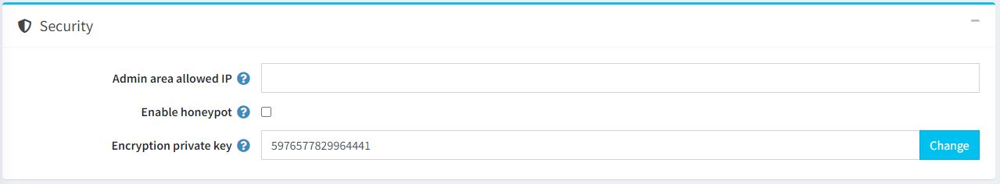
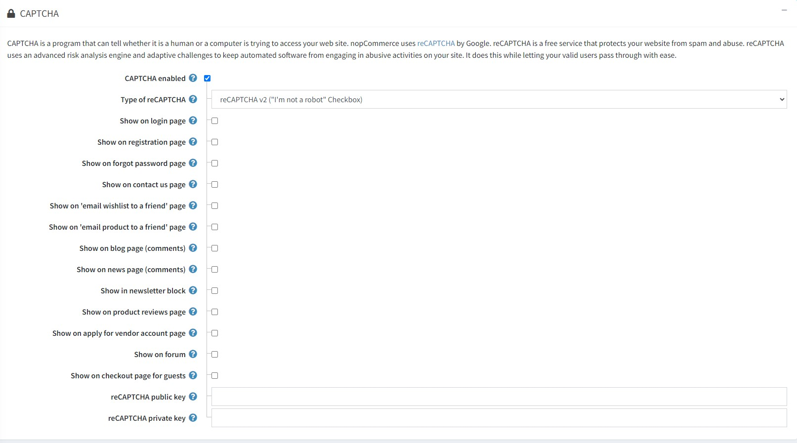

安全性設定
若要管理安全性設定，請前往 設定 → 設定 → 一般設定。
此頁面支援多商店設定；這意味著相同的設定可以套用於所有商店，或者針對不同商店進行個別定義。若您想要管理特定商店的設定，請從多商店設定下拉式清單中選擇該商店名稱，並勾選左側所需的核取方塊來為其設定自訂值。更多詳細資訊，請參閱 多商店設定。
安全性
定義 安全性 設定如下：

- 在 後台允許的 IP 欄位中，輸入允許存取後台的 IP 位址。如果您不想限制後台存取權，請將此欄位留空。IP 位址之間請使用逗號分隔（例如：127.0.0.10, 232.18.204.16）。
- 勾選 啟用 Honeypot 以啟用 [honeypot](https://en.wikipedia.org/wiki/Honeypot_(computing)。在電腦領域中，honeypot 是一種誘餌，用於偵測、轉移或以某種方式抵銷針對資訊系統的未經授權存取企圖。
- 在 加密私鑰 欄位中，輸入用於儲存敏感資料的加密私鑰。您可以隨時點擊 變更 來修改此金鑰。所有敏感資料皆使用此私鑰進行加密。
Note
建議您在變更加密金鑰之前先備份資料庫。敏感資料包含所有信用卡資訊（僅限信用卡資訊儲存在商店資料庫中的情況）。
CAPTCHA
CAPTCHA 是一種能夠分辨存取網站的是人類還是電腦程式的機制。nopCommerce 使用 Google 的 reCAPTCHA。reCAPTCHA 是一項免費服務，可保護您的網站免受垃圾訊息與濫用行為。reCAPTCHA 使用先進的風險分析引擎與自動化驗證機制，在防止自動化軟體在您的網站進行濫用活動的同時，讓您的真實使用者能順暢通過驗證。
定義 CAPTCHA 設定如下：

當勾選 啟用 CAPTCHA 後，此面板將顯示以下設定：
- reCAPTCHA 類型：選擇
reCAPTCHA v2或reCAPTCHA v3。兩者的差異在於 reCAPTCHA v2 會顯示「我不是機器人」核取方塊，而 reCAPTCHA v3 對顧客來說則是隱形的。進一步了解 reCAPTCHA v2 與 reCAPTCHA v3。 - reCAPTCHA v3 分數門檻：在選擇 reCAPTCHA v3 時啟用。進一步了解關於分數門檻的說明 here。
- 在 登入 頁面顯示 CAPTCHA。
- 在 註冊 頁面顯示 CAPTCHA。
- 在 忘記密碼 頁面顯示 CAPTCHA。
- 在 聯絡我們 頁面顯示 CAPTCHA。
- 在 將願望清單以電子郵件傳送給朋友 頁面顯示 CAPTCHA。
- 在 將商品以電子郵件傳送給朋友 頁面顯示 CAPTCHA。
- 在 部落格頁面（評論） 顯示 CAPTCHA。
- 在 新聞頁面（評論） 顯示 CAPTCHA。
- 在 電子報區塊 顯示 CAPTCHA。
- 在 商品評論 頁面顯示 CAPTCHA。
- 在 申請成為供應商 頁面顯示 CAPTCHA。
- 在 論壇 頁面顯示 CAPTCHA。
- 在 訪客結帳 頁面顯示 CAPTCHA。
- 輸入 reCAPTCHA 公開金鑰。
- 輸入 reCAPTCHA 私密金鑰。
Note
已終止對 Recaptcha v1 的支援。